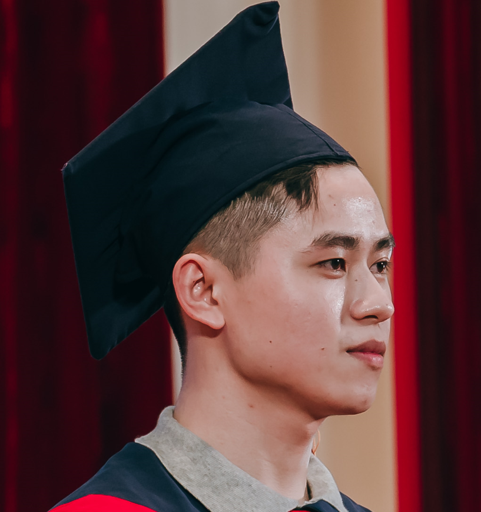

Le Hiep's Resume

EDUCATION
- Major: Automation and Electrical System.
- Graduated with Engineer’s Degree of HUST in May - 2024.
- CPA: 2.9/4.0
EXPERIENCE
- Researched and Designed fire warning system.
- Learned about Vietnam’s standards about fire warning.
- Improved skill on designing (Altium Designer).
PROJECT
SKILL
- Language: English – Having ability of researching and reading english documents for work.
- Soft skills: Presentation skill; Having ability to self-study and teamwork, work under high pressure.
- Software:
- Basic programming C.
- Altium Designer.
- Programming embedded microcontroller Arduino, ST, ESP.
- Basic simulation program (Proteus, MATLAB Simulink).
- Microsoft Office.